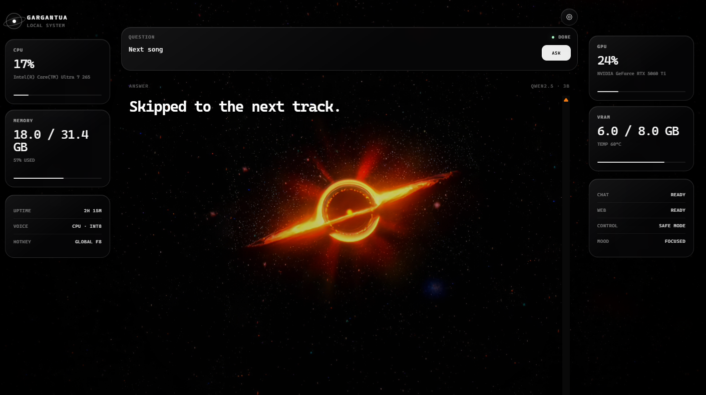

LOCAL SYSTEM
GARGANTUA
A local Windows desktop assistant with push-to-talk voice, local AI, system controls, live telemetry, memory, personality and optional live web search.
DOWNLOAD FOR WINDOWS
WHAT IT CAN DO
Hold F8 to talk
Local Qwen AI
Media + volume controls
Launch apps and sites
CPU / RAM / GPU telemetry
Optional Groq web search
Conversation memory
Gargantua personality
SETUP
Install Ollama, pull the local model, then run Gargantua Setup. Python and faster-whisper are installed automatically.
ollama pull qwen2.5:3b